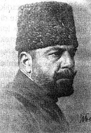

Cemal Paþa (1872-1922)

Ýttihat ve Terakki Cemiyeti'nin öne çýkan üç paþasýndan biri olan Bahriye Nazýrý Cemal Paþa, 6 Mayýs 1872'de Midilli'de doðdu. Asýl adý Ahmed Cemal'dir. Babasý, askerî eczacý Mehmed Nesib Bey'dir. 1880'de Kuleli Askeri Ýdadîsini, 1893'te Mekteb-i Harbiye-i Þahâne'yi bitirdikten sonra 1895'te Erkan-ý Harbiye tahsilini tamamlayarak yüzbaþý rütbesini aldý. Ýki sene sonra binbaþý oldu ve kýsa bir süre sonra 1906'da Osmanlý Hürriyet Cemiyetine katýldý. 31 Mart Hâdisesi sýrasýnda Anadolu'da görevli olmasýna raðmen, Ýstanbul'a gelerek Hareket Ordusuna katýldý.1911 yýlýnda Baðdat valiliðine atandý. Bu görevi sýrasýnda, Araplar arasýnda yayýlmaya baþlayan milliyetçilik akýmýyla mücadele etti. Bâb-ý Âli Baskýnýyla Mahmut Þevket Paþanýn sadarete getirilmesinden sonra Ýstanbul Muhafýzlýðýna tayin edildi (1913). Bir taraftan Ýstanbul'un güvenliðiyle uðraþýrken, diðer taraftan da Ýttihad ve Terakki muhaliflerine karþý sert tedbirler uyguladý. Bu arada cemiyet içindeki gücünü de artýyordu.
Ýkinci Balkan Savaþý sonrasýnda Edirne'nin geri alýnmasýný savunarak, bu teþebbüse karþý çýkanlarý iknada çok sert davrandý ve Edirne'nin geri alýnmasýnda etkili oldu. 1913 yýlýnda Nâfiâ Nazýrlýðýna getirildi. Ayný yýl mirliva rütbesine terfi etti ve bir sene sonra da Bahriye nazýrý oldu. 1914 Haziran'ýnda Fransa'ya gidip ittifaka girmeyi hükümet adýna teklif ettiyse de Fransa, herhangi bir siyasi ittifaka yanaþmayacaðýný Cemal Paþaya bildirince bu ülkeden ayrýldý. Almanya ile yapýlan anlaþmada aktif rolü olmamakla birlikte, ittifak yapma konusunda baþka alternatifi kalmayan hükümetin yaptýðý bu ittifaký destekledi.
Osmanlý donanmasýna baðlý gemilerin Rus limanlarýný topa tutmasýndan sonra meydana gelen kabine ihtilafýnda, savaþa girilmesini savunanlarýn yanýnda yer aldý. Savaþýn baþlamasýndan sonra Bahriye Nazýrlýðýna ilâveten Dördüncü Ordu Kumandanlýðýna getirildi. Ýngilizlere karþý giriþtiði iki kanal harekâtýnda da baþarýsýz oldu ve bundan dolayý hayalcilikle suçlandý.
Arap milliyetçiliðine karþý sert tedbirlere baþvurarak, milliyetçilerin liderlerinden on birini 1915'de, yirmi birini de 1916 yýlýnda idam ettirdi. Cemal Paþa, 1915'de Ermenilerin Suriye'ye göç ettirilmesinde önemli bir rol oynadý. Hatta, bu konuda cemiyetin ileri gelenleri ile ters düþmeyi göze almýþtýr.
Ýngilizlerin, 1917 yýlý sonlarýndan itibaren geçtikleri karþý saldýrýlarý önlemekte baþarýsýz olunca kabinede eleþtiriye uðramýþ, eleþtirilerin þiddetlenmesi üzerine Dördüncü Ordu Komutanlýðýndan istifa ederek Ýstanbul'a dönmüþtür. Bozgundaki rolü ile ilgili olarak parti içinde yargýlanmýþ olmakla beraber suçlu bulunmamýþtýr. Akabinde Talât Paþa kabinesinin istifasýndan sonra, cemiyetin ileri gelenleriyle birlikte yurt dýþýna kaçtý. Berlin, Münih ve Ýsviçre'ye geçti.
Cemal Paþa, yurt dýþýna çýktýktan sonra,önceleri Halit Baboviç adýna düzenlenmiþ bir pasaport ile Ýsviçre'nin Davos kentinde bir dað köyüne yerleþmiþ, ardýndan Afganistan'a geçmek için Moskova'ya giderek Çiçerin'le görüþmüþtür. Bu giriþimini kabul ettirerek, Serdar Ahmet Cemal Han takma adýyla Afganistan'a geçmeyi baþarmýþtýr. Burada da boþ durmayýp reformlara öncülük yapmýþ ve orduyu yeniden düzenlemiþtir. Ýþgalci Ýngilizler bundan rahatsýz olup çalýþmalarýný engellemek istemiþlerse de, Cemal Paþa Afgan- Sovyet anlaþmasýný imzalamaya muvaffak olmuþtur. Bir ara yeniden Avrupa'ya gitmiþ, baþarýlý faaliyetlerinden dolayý Afgan temsilcisi muamelesi görmüþtür.
Avrupa'dan Moskova'ya dönüþünde bu sefer hoþ karþýlanmamýþ, TBMM hükümetiyle Moskova Anlaþmasý'ný imzalayan Bolþevikler, ondan tüm desteklerini çekmiþlerdir. Sovyetlerin Ankara ile yakýnlaþmalarý, Cemal Paþanýn Afganistan'daki çalýþmalarýný olumsuz etkilemiþtir. Bu arada, Anadoluya geçmek arzusuyla Ankara'daki yeni hükümetle temasa geçmiþtir. Fakat bu arzusuna ulaþamamýþtýr. 22 Temmuz 1922'de, Ankara'dan cevap almak için geldiði TBMM Tiflis temsilciliðinden çýkarken, yanýnda bulunan iki yaveri ile birlikte þehid edilmiþtir. Kimler tarafýndan öldürüldükleri hâlâ bilinmeyen Cemal Paþa ve yaverlerinin cenazeleri Erzurum'a getirilerek defnedilmiþlerdir.
Bu cinayetin, Talât Paþa ve Said Halim Paþadan sonra Ermeni komiteleri tarafýndan iþlenen cinayetlerin devamý olduðu konusunda iddialar olduðu gibi, Rus gizli servisinin bir suikastý olduðu da söylenmektedir. Rivayete göre, Halil Paþa Cemal Paþaya bu suikastý önceden haber vermiþtir. Bu iddiaya dayanýlarak Cemal Paþanýn, bir Gürcü komitesi tarafýndan Moskova'nýn emriyle öldürüldüðü öne sürülmüþtür.
Divân-ý Harbî-i Örfî'nin Kararlarý
Birinci Dünya Savaþýnda müttefikleriyle beraber yenik ayrýlan Osmanlý Devletinde, Ýttihatçýlarýn muhalifleri büyük bir karalama kampanyasý baþlatmýþ ve haklý-haksýz çok sert eleþtiriler yapýlmýþtýr. Ýttihatçýlarýn ileri gelenleri, Divân-ý Harbî-i Örfî adlý bir mahkemede kendileri yurt dýþýnda bulunduklarýndan, gýyaplarýnda yargýlanmýþlardýr.
1919 yýlýnda baþlayan yargýlamada Savcý, iddianamesinde þöyle demektedir "1855, 1877 tarihlerinde yüce Ýngiltere Devleti, Osmanlý Devleti'nin ülke bütünlüðünü ve yüksek baðýmsýzlýðýný iki önemli tehlikeden kurtarmýþ ve yüce Fransa Devleti de Osmanlý Devleti'ne, küçük yaþtan beri iþittiðimiz gibi sürekli borç vererek bizim yoksunluk içindeki kuþaklarýmýzý beslemiþ ve geçindirmiþtir. Bu iki devletin üstün bilgiye dayanan öðütlerine ve yol göstericiliklerine, bir savaþa girmeme konusundaki aydýnlatmalarýna aldýrmayarak otuz altý bankadan yedi milyon lira borç saðlayamayan ve birçok yýldan beri dünyadaki tarihsel ve güzel eserleri, birçok þehir ve kasabayý, bayýndýrlýklarý yýkmak üzere çalýþmýþ Alman Devletinin vahþi alýnyazýsýna talihlerini baðlamýþlardýr. Ve nihayet memleketimizi de bu felakete sürüklediler..." (Tevfik Çavdar, Ýttihat ve Terakki, Ýstanbul 1994, s. 116)
Çok haksýz iddialarýn yer aldýðý ve bir bakýma haksýz sayýlacak ithamlarýn yer aldýðý bu iddianame, Ýttihatçýlarýn gerçek mesuliyetinin ortaya çýkarýlmasýna da mani olmuþtur. Savaþ baþlayýncaya kadar, hem Ýngilizler hem de Fransýzlarla ittifak arayýþlarýna girilmiþ, ancak bir netice alýnamamýþtýr. Hatta Ýngiltere, daha önceden sipariþi yapýlýp parasý ödenmiþ bulunan iki gemimize el koyarak teslim etmemiþtir. Fransa'ya gönderilen Cemal Paþaya iltifat edilmediði gibi, ittifak teklifi de dikkate alýnmamýþtýr. Bu konuda Cemal Paþa þu bilgileri vermektedir: "Fransa'ya büyük bir ümitle gitmiþtim, büyük bir hayal kýrýklýðýna uðrayarak döndüm. Bizim için bugün bu dakika, Alman tekliflerini kabulden baþka çare kalmamýþtýr... Teessüfle söylerim ki, Hariciye Nazýrý Mösyö Viani, benimle doðrudan doðruya görüþmeye lüzum görmedi. Dýþiþleri Siyasî Ýþleri Müdürü Mösyö Margerie'yi benimle mülâkata memur eyledi ve ben bu þekli de kabul ettim."
Cemal Paþa, Osmanlýnýn deðerini takdir etmeyip seviyesiz konuþan, Yunanistan'ýn korunmasýný ön planda tutan Fransýz hariciyeciye; "(...) gelecekte onlardan ümit ettiðiniz menfaatler dolayýsýyla Yunanlýlarý daima desteklemeyi, siyasetin hikmetine uygun kabul ediyorsunuz. Fakat haritayý açýp tetkik edecek olursanýz göreceksiniz ki, biz bugün Fransa'ya Yunanistan'dan daha ziyade lazým olacaðýz" þeklinde ikazda bulunmasýna raðmen herhangi bir netice alamamýþtýr. (Mevlanzâde Rýfat, Ýttihat ve Terakki Ýktidarý ve Türkiye Ýnkýlâbýnýn Ýçyüzü, Ýstanbul 1993, s. 40-42)
Divân-ý Harbî-i Örfî'de yapýlan muhakeme iki ay sürmüþ; Talat, Enver, Cemal Paþalarla Dr. Nazým idama mahkum edilmiþtir. Mahkemenin, gýyabýnda idamýna karar verdiði Cemal Paþa, "Osmanlý Devletinin vatandaþlarýndan olan Araplarýn isyanýna sebep olmakla" suçlanmýþtýr.
Osmanlý Devleti, üzerinde yapýlan planlar gereði ittifak teklifleri kabul edilmeyerek, bir bakýma Almanya ile beraber hareket etmek zorunda býrakýlmýþ ve savaþta tarafsýz kalma þansý da imkansýzlaþmýþtýr.